長期トレンド
JKMとJEPXシステムプライスの推移グラフ
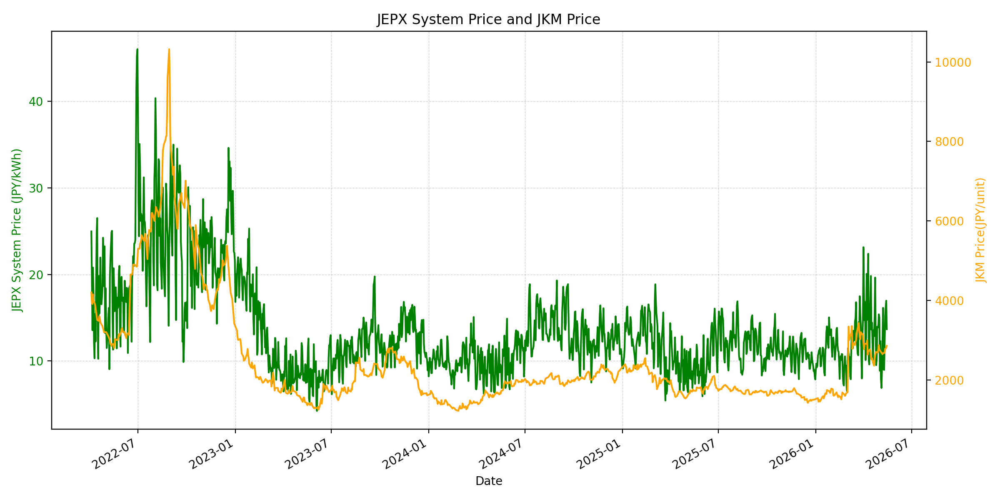
WTIの推移グラフ
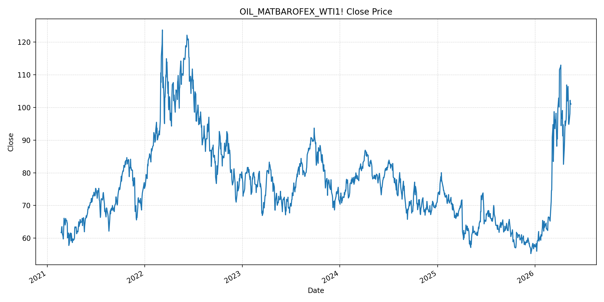
JEPXエリアプライスグラフ（直近一年分）
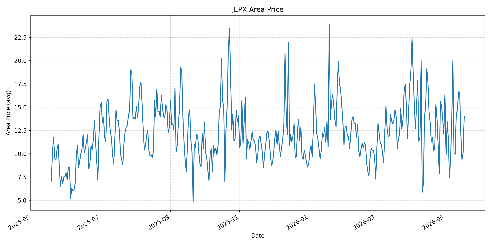
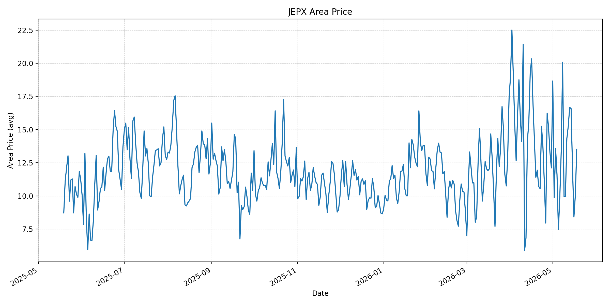
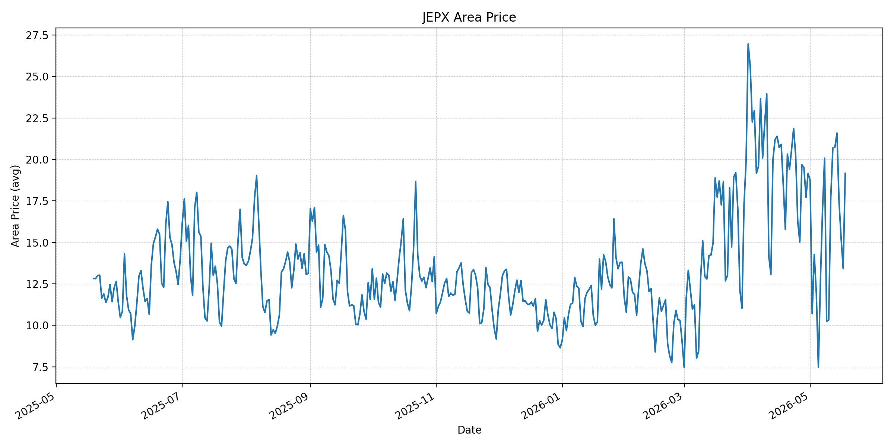
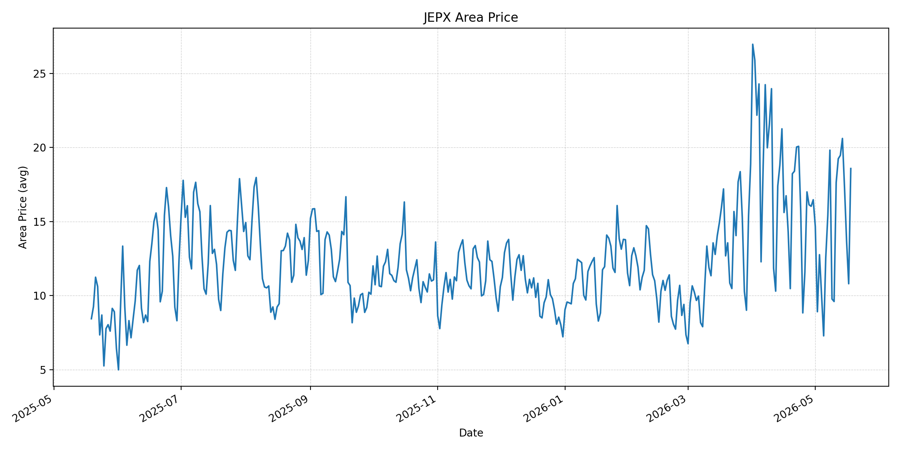
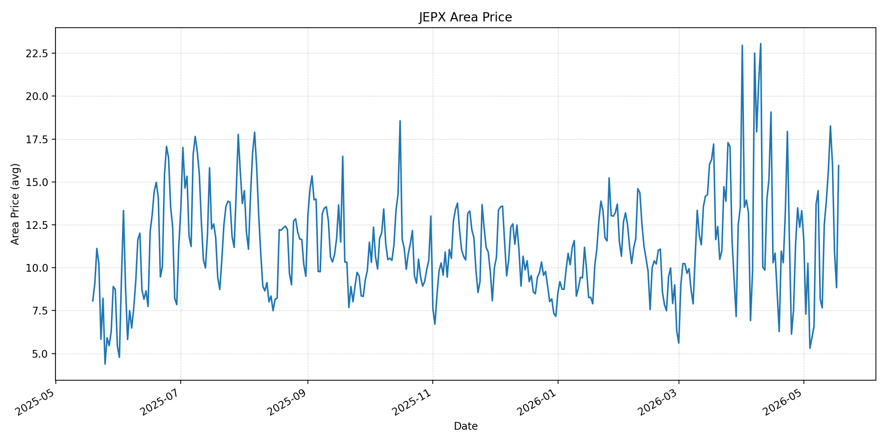
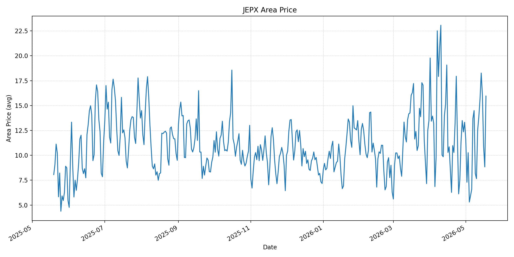
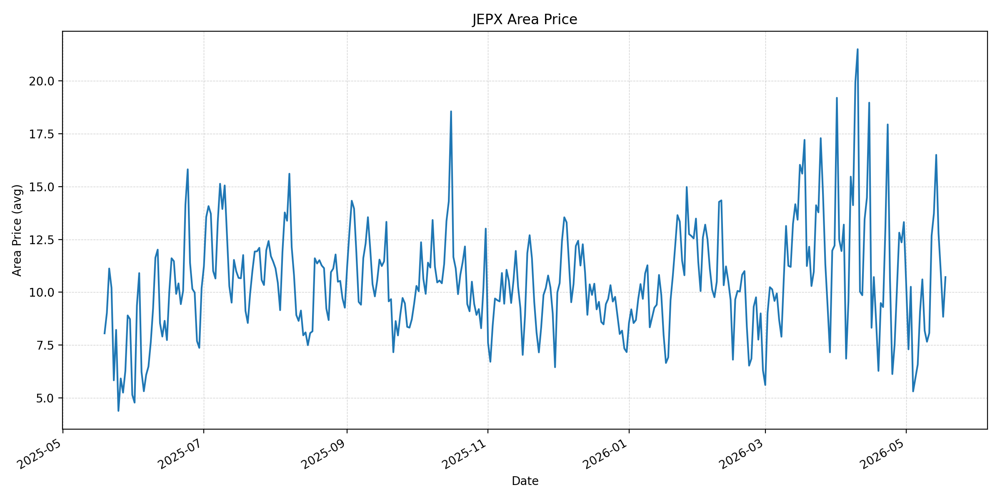
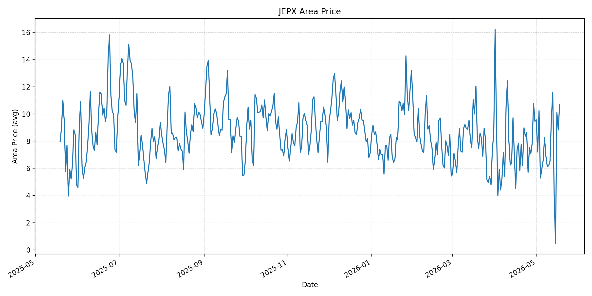
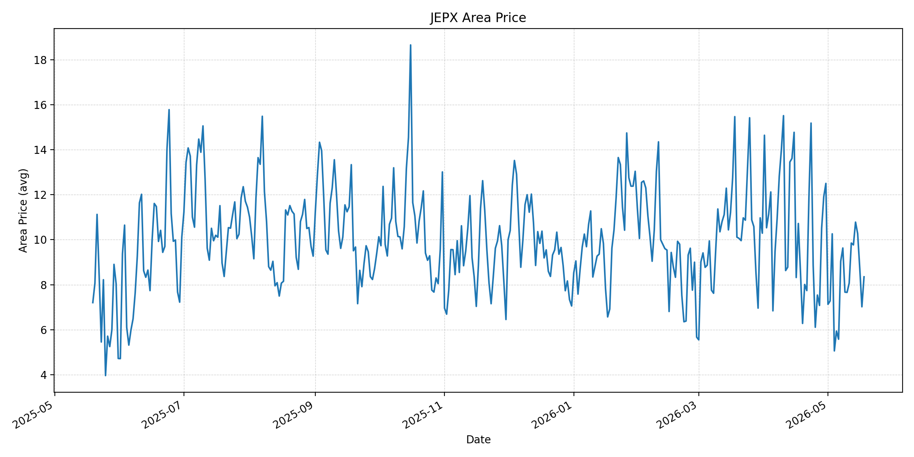
短期トレンド
JKMとJEPXシステムプライスの推移グラフ
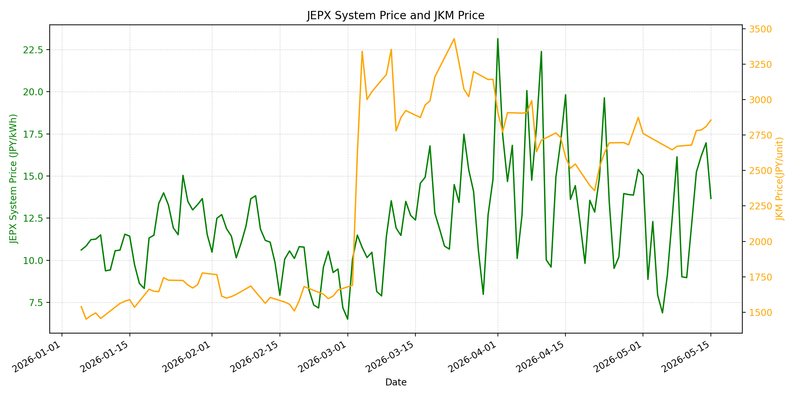
WTIの推移グラフ
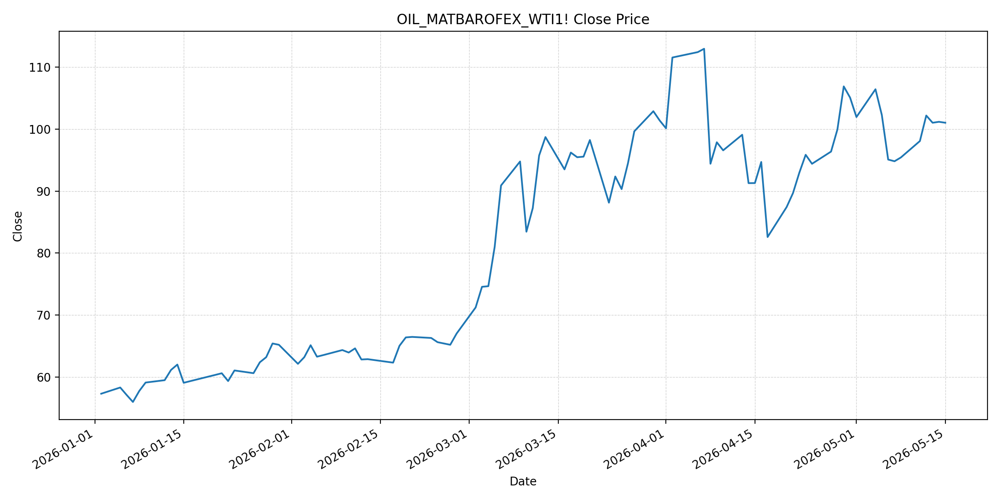
JEPXシステムプライス
JEPXは受渡日ベースの最新非空値で評価しています。最新値は 2026-05-18 分です。先週終値は 2026-05-11 時点の直近値、先月終値は 2026-04-30 時点の直近値で評価しています。
| エリア | 当日価格 | 前日価格 | 前日比（％） | 先週終値 | 先週比（％） | 先月終値 | 先月比（％） | 過去最高値 | 最高値比（％） |
|---|---|---|---|---|---|---|---|---|---|
| システム | 12.99 | 9.3 | 39.68 | 12.06 | 7.71 | 15.39 | -15.59 | 64.06 | -79.72 |
| 北海道 | 14.02 | 10.12 | 38.54 | 14.32 | -2.09 | 12.11 | 15.77 | 73.92 | -81.03 |
| 東北 | 13.52 | 10.04 | 34.66 | 14.33 | -5.65 | 12.11 | 11.64 | 84.92 | -84.08 |
| 東京 | 19.16 | 13.42 | 42.77 | 17.72 | 8.13 | 19.16 | 0 | 86.13 | -77.75 |
| 中部 | 18.58 | 10.8 | 72.04 | 17.63 | 5.39 | 16.47 | 12.81 | 52.06 | -64.31 |
| 北陸 | 15.95 | 8.84 | 80.43 | 12.52 | 27.4 | 13.32 | 19.74 | 46.48 | -65.69 |
| 関西 | 15.95 | 8.84 | 80.43 | 12.52 | 27.4 | 13.32 | 19.74 | 46.48 | -65.69 |
| 中国 | 10.72 | 8.84 | 21.27 | 8.07 | 32.84 | 13.32 | -19.52 | 46.48 | -76.94 |
| 四国 | 10.72 | 8.82 | 21.54 | 6.53 | 64.17 | 9.46 | 13.32 | 46.48 | -76.94 |
| 九州 | 8.35 | 7.02 | 18.95 | 8.07 | 3.47 | 12.5 | -33.2 | 40.54 | -79.4 |
LNG先物価格
最新値は 2026-05-15 の LNG(close) です。先週終値は 2026-05-08 時点の直近値、先月終値は 2026-04-30 時点の直近値で評価しています。
| 当日価格 | 前日価格 | 前日比（％） | 先週終値 | 先週比（％） | 先月終値 | 先月比（％） | 過去最高値 | 最高値比（％） |
|---|---|---|---|---|---|---|---|---|
| 2856 | 2810 | 1.64 | 2671 | 6.93 | 2874 | -0.63 | 10319 | -72.32 |
石油先物価格
最新値は 2026-05-15 の OIL(close) です。先週終値は 2026-05-08 時点の直近値、先月終値は 2026-04-30 時点の直近値で評価しています。
| 当日価格 | 前日価格 | 前日比（％） | 先週終値 | 先週比（％） | 先月終値 | 先月比（％） | 過去最高値 | 最高値比（％） |
|---|---|---|---|---|---|---|---|---|
| 101.02 | 101.17 | -0.15 | 95.42 | 5.87 | 105.07 | -3.85 | 123.7 | -18.33 |
ニュース
イラン情勢に関するニュース
- 2026年5月18日、TBSは、トランプ米大統領がイランに早期対応を迫り、今週19日に安全保障担当幹部と攻撃再開の可能性を協議する見通しだと報じました。停戦協議は継続しているものの、米側の圧力は強まっています。 参照: TBS CROSS DIG with Bloomberg, 2026-05-18
- 2026年5月18日、Business Timesは、米国とイランがホルムズ海峡再開を含む合意からなお遠く、UAEの原子力施設で火災を伴うドローン攻撃が発生したと報じました。脆弱な停戦の下で、交渉と軍事リスクが並行しています。 参照: The Business Times, 2026-05-18
ホルムズ海峡経由の石油・LNGに関するニュース
- 2026年5月18日、Business Timesは、米国側が中国向けのイラン産原油タンカー3隻の通過を認めたとし、イラン国営メディアが5月14日以降に30隻超の通過を伝えていると報じました。通航は限定的に戻っていますが、通常時への正常化とは距離があります。 参照: The Business Times, 2026-05-18
- 2026年5月15日、Reutersは、5月15日の原油価格が3％超上昇し、ブレントが109.26ドル、WTIが105.42ドルで終えたと報じました。直近のOIL(close)は101.02ですが、ホルムズ通航と戦闘再開リスクが価格の上振れ要因であり続けています。 参照: Investing.com/Reuters, 2026-05-15
ホルムズ海峡経由でない石油・LNGに関するニュース
- 過去24時間で、非ホルムズ経由の石油・LNG調達に関する強い新規報道は確認できませんでした。直近の経産省資料は、原油の供給源多角化で年末まで供給確保の目途がついた一方、ホルムズ通航制約が6月上旬まで続き、その後の完全正常化にも2〜3ヶ月を要する可能性を示しています。 参照: 経済産業省 資源・燃料政策資料, 2026-05-15
- 同資料では、日本の原油の中東依存度が高く、ホルムズ依存度も大きい一方、LNGの中東・ホルムズ依存度は原油より低いと整理されています。非ホルムズ調達の拡大は原油供給の安定化に有効ですが、LNG・石油製品・海上輸送コストへの間接影響は残ります。 参照: 経済産業省 資源・燃料政策資料, 2026-05-15
日本国内のイラン戦争に関係するニュース
- 過去24時間で、日本国内のJEPX制度や電力市場制度に直接影響する重大な新規発表は確認できませんでした。燃料政策面では、資源エネルギー庁が代替調達、備蓄放出、供給源多角化を中心に当面の石油需給対応を整理しています。 参照: 経済産業省 資源・燃料政策資料, 2026-05-15
- 2026年5月18日、TBSは、湾岸諸国がイランへの協調軍事対応では一致せず、UAEと近隣国の足並みに乱れがあると報じました。日本向け燃料調達には直接の制度変更ではないものの、湾岸側の供給・防衛協調が弱い場合、輸送リスクの低下は遅れやすくなります。 参照: TBS CROSS DIG with Bloomberg, 2026-05-18
インサイト
ニュース事項による日本の電力市場への影響（短期：数日〜1週間）
- JEPXシステムプライスは 12.99 円/kWhで前日比 39.68% 上昇しましたが、先月比では -15.59% です。東京 19.16、中部 18.58、北陸・関西 15.95 が相対的に高く、休日明けの需給戻りと地域差が短期価格を押し上げています。
- LNGは 2856 と前日比 1.64%、先週比 6.93%、OILは 101.02 と前日比 -0.15%、先週比 5.87% です。米イラン協議が停滞し、攻撃再開の可能性が報じられているため、数日から1週間は燃料・海上保険・船腹コストのリスクプレミアムが残りやすいです。
- ホルムズ通航は一部回復しているものの、30隻超の通過は通常時の水準には届きません。JEPXの当日上昇は燃料価格だけでは説明しきれないため、短期運用では燃料ニュースと同時に、エリア別需給、太陽光出力、火力稼働率の変化を見る必要があります。
ニュース事項による日本の電力市場への影響（長期：1ヶ月〜半年）
- OILは先月比 -3.85%、LNGは先月比 -0.63% と4月末を下回りますが、どちらも先週比では上昇しています。経産省資料が示すように、ホルムズ制約が6月上旬まで残り、完全正常化にさらに時間を要する場合、燃料費の低下は緩慢になります。
- 非ホルムズ調達と備蓄運用により、日本の物理的な原油供給不安は抑えられています。ただし、調達先の遠距離化、品質差、船舶・保険コストは1ヶ月から半年の燃料費に遅れて反映される可能性があり、火力比率の高い時間帯ほど卸価格への影響が出やすいです。
- JEPXシステムは先月比 -15.59% ですが、中部は 12.81%、北陸・関西は 19.74% 上昇しています。全国平均が落ち着いても、地域別には燃料調達と需給条件で価格差が残るため、相対契約・ヘッジではシステム価格だけでなくエリア価格の上振れ余地を織り込む必要があります。